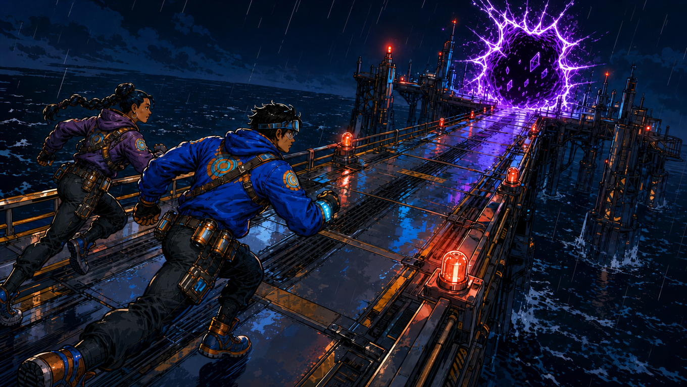

Re: The Crossing License · Chapter 1
From: Rift Runners · manuscript build
Subject: Honest Clock

Port Grey hit Kade like a hand on the chest—noise first, then cold rain, then the smell of fried oil and ozone.

His courier band had stopped itching.

Comic book panel. The scene must depict this story beat from the comic script (clear pose, props, and emotional read—not a generic portrait or a different moment): "That was worse." Concrete staging requirement: include a clear physical action, a readable prop, and an environmental anchor so this beat does not become a generic portrait. Emotional read: brittle humor over stress, never fully relaxed. Character anchor: Kade: young gray-market rift runner, dark brown skin, close-cropped hair, tired pilot-alert eyes, worn patched flight jacket, thin gloves, courier band with unreadable glyph flicker. Setting anchor: wet Port Grey alleys/streets, dead-neon stacks, vector lattice overlays, pier-head route pressure. Continuity anchor: Series continuity for this chapter: keep the street vector course (true line vs false brick glow), kiosk/door puzzle cycle, Bench arch silhouette at pier head, and Silk Meridian’s parallel rooftop line consistent across panels. Panel-specific shot plan (page 2, panel 3): medium portrait framing with one dominant gesture and one supporting prop. Primary visual intent: medium character-forward framing that keeps one decisive action and one anchoring environmental cue in the same shot. Near-future sci-fi that feels grounded and lived-in: worn metal, cable runs, cold vapor, harsh practical lights. You can read the main shapes at a glance. Leave a little empty margin where speech balloons can go later. Do not draw dialogue or captions inside the image. Framing feels like a tall comic panel: figure and background both read clearly.
That was worse.
Comic book panel. The scene must depict this story beat from the comic script (clear pose, props, and emotional read—not a generic portrait or a different moment): "Itch meant nerves still worked. Now the band sat on his skin like a clock that had learned a language he never agreed to speak." Character anchor: Kade: young gray-market rift runner, dark brown skin, close-cropped hair, tired pilot-alert eyes, worn patched flight jacket, thin gloves, courier band with unreadable glyph flicker. Setting anchor: wet Port Grey alleys/streets, dead-neon stacks, vector lattice overlays, pier-head route pressure. Continuity anchor: Series continuity for this chapter: keep the street vector course (true line vs false brick glow), kiosk/door puzzle cycle, Bench arch silhouette at pier head, and Silk Meridian’s parallel rooftop line consistent across panels. Panel-specific shot plan (page 2, panel 4): over-shoulder portrait framing that keeps expression and context both readable. Primary visual intent: medium character-forward framing that keeps one decisive action and one anchoring environmental cue in the same shot. Near-future sci-fi that feels grounded and lived-in: worn metal, cable runs, cold vapor, harsh practical lights. You can read the main shapes at a glance. Leave a little empty margin where speech balloons can go later. Do not draw dialogue or captions inside the image. Framing feels like a tall comic panel: figure and background both read clearly.
Itch meant nerves still worked. Now the band sat on his skin like a clock that had learned a language he never agreed to speak.
Comic book panel. The scene is a floating holographic readout panel as the dominant visual, glowing softly with the lines "[MIRE // RECONCILE COMPLETE] Crossing license: ACTIVE (PROVISIONAL) Binding clause: LOCAL HEAT REQUIRED WITHIN 36:00:00 (HONEST) Failure mode: FORFEIT + SILENCE (72:00:00) Next vector: EARTH // PORT GREY // PIER 7 (CLASS 1) Mode: NONCONTACT Reminder: violence corrodes claim. be clever". Emotional read: procedural menace wrapped in polite language. Character anchor: Kade: young gray-market rift runner, dark brown skin, close-cropped hair, tired pilot-alert eyes, worn patched flight jacket, thin gloves, courier band with unreadable glyph flicker. Setting anchor: wet Port Grey alleys/streets, dead-neon stacks, vector lattice overlays, pier-head route pressure. Continuity anchor: Series continuity for this chapter: keep the street vector course (true line vs false brick glow), kiosk/door puzzle cycle, Bench arch silhouette at pier head, and Silk Meridian’s parallel rooftop line consistent across panels. If there is a HUD, keep it as soft glow, simple shapes, and a few symbols, not a wall of tiny readable text. Panel-specific shot plan (page 3, panel 5): communication beat framed as an interaction, with clear speaking/listening orientation and a visible source for the call or line. Primary visual intent: make the information display feel story-critical, with the person and environment still readable around it rather than turning the panel into abstract UI noise. Near-future sci-fi that feels grounded and lived-in: worn metal, cable runs, cold vapor, harsh practical lights. You can read the main shapes at a glance. Leave a little empty margin where speech balloons can go later. Do not draw dialogue or captions inside the image. Any screen glow or HUD stays loose and abstract, not micro-legible blocks. Framing feels like a wide movie still: you can read the room in one look.
Readout
[MIRE // RECONCILE COMPLETE]
Crossing license: ACTIVE (PROVISIONAL)
Binding clause: LOCAL HEAT REQUIRED WITHIN 36:00:00 (HONEST)
Failure mode: FORFEIT + SILENCE (72:00:00)
Next vector: EARTH // PORT GREY // PIER 7 (CLASS 1)
Mode: NONCONTACT
Reminder: violence corrodes claim. be clever.Comic book panel. The scene must depict this story beat from the comic script (clear pose, props, and emotional read—not a generic portrait or a different moment): "Kade read be clever off a shutter tag as he cut through a night-market alley. Someone had painted it like a dare." Staging requirement: show **Kade reading stenciled or painted alley/shutter text** as large environment lettering while his stride proves he is still mid-vector. Critical props for this exact beat: **painted or stenciled shutter / wall copy** (hand-done letterforms), night-market alley depth, vendor LEDs; courier band optional at wrist edge. Emotional read: provocation in the walls—someone turned the city into a taunt. Differentiation constraint: do not replace the graffiti read with a generic alley establishing shot where the text is illegible background noise. Character anchor: Kade: young gray-market rift runner, dark brown skin, close-cropped hair, tired pilot-alert eyes, worn patched flight jacket, thin gloves, courier band with unreadable glyph flicker. Setting anchor: wet Port Grey alleys/streets, dead-neon stacks, vector lattice overlays, pier-head route pressure. Continuity anchor: Series continuity for this chapter: keep the street vector course (true line vs false brick glow), kiosk/door puzzle cycle, Bench arch silhouette at pier head, and Silk Meridian’s parallel rooftop line consistent across panels. Panel-specific shot plan (page 4, panel 6): alley tracking with **Kade's eyeline snapped to shutter graffiti**; the painted/stenciled phrase sits on a **vertical plane in frame center**, stride mid-step so motion continues through the beat. Primary visual intent: **environmental copy as hazard**—the dare painted on the city reads as loud as a shout, with Kade still in motion. Near-future sci-fi that feels grounded and lived-in: worn metal, cable runs, cold vapor, harsh practical lights. You can read the main shapes at a glance. Leave a little empty margin where speech balloons can go later. Do not draw dialogue or captions inside the image. Exception for this beat only: **stenciled or painted words on the shutter, vendor wall, or alley surface** may read in large rough letterforms (e.g. BE CLEVER)—environment graffiti only, not comic speech balloons or caption boxes. Framing feels like a tall comic panel: figure and background both read clearly.
Kade read be clever off a shutter tag as he cut through a night-market alley. Someone had painted it like a dare.
Comic book panel. The scene must depict this story beat from the comic script (clear pose, props, and emotional read—not a generic portrait or a different moment): "The street vector had already started without asking him if he was sentimental." Concrete staging requirement: include a clear physical action, a readable prop, and an environmental anchor so this beat does not become a generic portrait. Character anchor: Kade: young gray-market rift runner, dark brown skin, close-cropped hair, tired pilot-alert eyes, worn patched flight jacket, thin gloves, courier band with unreadable glyph flicker. Setting anchor: wet Port Grey alleys/streets, dead-neon stacks, vector lattice overlays, pier-head route pressure. Continuity anchor: Series continuity for this chapter: keep the street vector course (true line vs false brick glow), kiosk/door puzzle cycle, Bench arch silhouette at pier head, and Silk Meridian’s parallel rooftop line consistent across panels. Panel-specific shot plan (page 4, panel 7): over-shoulder portrait framing that keeps expression and context both readable. Primary visual intent: medium character-forward framing that keeps one decisive action and one anchoring environmental cue in the same shot. Near-future sci-fi that feels grounded and lived-in: worn metal, cable runs, cold vapor, harsh practical lights. You can read the main shapes at a glance. Leave a little empty margin where speech balloons can go later. Do not draw dialogue or captions inside the image. Framing feels like a tall comic panel: figure and background both read clearly.
The street vector had already started without asking him if he was sentimental.
Comic book panel. The scene must depict this story beat from the comic script (clear pose, props, and emotional read—not a generic portrait or a different moment): "MIRE painted the course in layers only his band could parse cleanly: a true line along cracked asphalt, false cousins on the wet brick beside it, a rotating kiosk that showed three door icons and only…." Staging requirement: include the **kiosk door trio** plus **true-line vs false-cousin lattice** fork so the viewer can see the wrong-right door puzzle the prose describes. Critical props for this exact beat: **rotating kiosk door trio**, **true-line lattice streak** on cracked asphalt vs **false cousin glow** on wet brick, wet neon read. Character anchor: Kade: young gray-market rift runner, dark brown skin, close-cropped hair, tired pilot-alert eyes, worn patched flight jacket, thin gloves, courier band with unreadable glyph flicker. Setting anchor: wet Port Grey alleys/streets, dead-neon stacks, vector lattice overlays, pier-head route pressure. Continuity anchor: Series continuity for this chapter: keep the street vector course (true line vs false brick glow), kiosk/door puzzle cycle, Bench arch silhouette at pier head, and Silk Meridian’s parallel rooftop line consistent across panels. Panel-specific shot plan (page 4, panel 8): street puzzle staging—**rotating vendor kiosk** with **three door icons** and **contrasting MIRE lattice paths** (one true line along asphalt, false glow on wet brick); Kade's choice moment readable. Primary visual intent: **course legibility**—viewer can trace which door icon is lying, which lattice line is honest, and where Kade commits. Near-future sci-fi that feels grounded and lived-in: worn metal, cable runs, cold vapor, harsh practical lights. You can read the main shapes at a glance. Leave a little empty margin where speech balloons can go later. Do not draw dialogue or captions inside the image. Framing feels like a tall comic panel: figure and background both read clearly.
MIRE painted the course in layers only his band could parse cleanly: a true line along cracked asphalt, false cousins on the wet brick beside it, a rotating kiosk that showed three door icons and only…
Comic book panel. The scene must depict this story beat from the comic script (clear pose, props, and emotional read—not a generic portrait or a different moment): "one real door when the cycle hit honest." Concrete staging requirement: include a clear physical action, a readable prop, and an environmental anchor so this beat does not become a generic portrait. Character anchor: Kade: young gray-market rift runner, dark brown skin, close-cropped hair, tired pilot-alert eyes, worn patched flight jacket, thin gloves, courier band with unreadable glyph flicker. Setting anchor: wet Port Grey alleys/streets, dead-neon stacks, vector lattice overlays, pier-head route pressure. Continuity anchor: Series continuity for this chapter: keep the street vector course (true line vs false brick glow), kiosk/door puzzle cycle, Bench arch silhouette at pier head, and Silk Meridian’s parallel rooftop line consistent across panels. Panel-specific shot plan (page 4, panel 9): tight portrait framing with background depth cues kept simple and uncluttered. Primary visual intent: medium character-forward framing that keeps one decisive action and one anchoring environmental cue in the same shot. Near-future sci-fi that feels grounded and lived-in: worn metal, cable runs, cold vapor, harsh practical lights. You can read the main shapes at a glance. Leave a little empty margin where speech balloons can go later. Do not draw dialogue or captions inside the image. Framing feels like a tall comic panel: figure and background both read clearly.
one real door when the cycle hit honest.
Comic book panel. The scene must depict this story beat from the comic script (clear pose, props, and emotional read—not a generic portrait or a different moment): "Kade ran the true line." Character anchor: Kade: young gray-market rift runner, dark brown skin, close-cropped hair, tired pilot-alert eyes, worn patched flight jacket, thin gloves, courier band with unreadable glyph flicker. Setting anchor: wet Port Grey alleys/streets, dead-neon stacks, vector lattice overlays, pier-head route pressure. Continuity anchor: Series continuity for this chapter: keep the street vector course (true line vs false brick glow), kiosk/door puzzle cycle, Bench arch silhouette at pier head, and Silk Meridian’s parallel rooftop line consistent across panels. Panel-specific shot plan (page 5, panel 10): tracking low-angle sprint with **MIRE lattice true-line paint dominant underfoot**—Kade's stride locked to that lane, false cousin glows de-emphasized at frame edge. Primary visual intent: **lattice-locked sprint**—Kade commits along the **true line** with MIRE course paint obvious underfoot; speed reads as discipline, not chaos. Near-future sci-fi that feels grounded and lived-in: worn metal, cable runs, cold vapor, harsh practical lights. You can read the main shapes at a glance. Leave a little empty margin where speech balloons can go later. Do not draw dialogue or captions inside the image. Framing feels like a wide movie still: you can read the room in one look.
Kade ran the true line.
Comic book panel. The scene must depict this story beat from the comic script (clear pose, props, and emotional read—not a generic portrait or a different moment): "A vendor’s awning tried to become a wall for one beat. He ducked early. The band liked early." Character anchor: Kade: young gray-market rift runner, dark brown skin, close-cropped hair, tired pilot-alert eyes, worn patched flight jacket, thin gloves, courier band with unreadable glyph flicker. Setting anchor: wet Port Grey alleys/streets, dead-neon stacks, vector lattice overlays, pier-head route pressure. Continuity anchor: Series continuity for this chapter: keep the street vector course (true line vs false brick glow), kiosk/door puzzle cycle, Bench arch silhouette at pier head, and Silk Meridian’s parallel rooftop line consistent across panels. Panel-specific shot plan (page 6, panel 11): medium portrait framing with one dominant gesture and one supporting prop. Primary visual intent: medium character-forward framing that keeps one decisive action and one anchoring environmental cue in the same shot. Near-future sci-fi that feels grounded and lived-in: worn metal, cable runs, cold vapor, harsh practical lights. You can read the main shapes at a glance. Leave a little empty margin where speech balloons can go later. Do not draw dialogue or captions inside the image. Framing feels like a tall comic panel: figure and background both read clearly.
A vendor’s awning tried to become a wall for one beat. He ducked early. The band liked early.
Comic book panel. The scene must depict this story beat from the comic script (clear pose, props, and emotional read—not a generic portrait or a different moment): "TOLERANCE OK flashed. He hated that it felt like praise." Staging requirement: show **TOLERANCE OK** as a **UI toast / band HUD bloom** near Kade's forearm or cheek—systems language, not a compliment balloon. Critical props for this exact beat: **floating band/UI ribbon reading TOLERANCE OK** near Kade's courier band, wet street reflection catching the flare. Emotional read: insult disguised as approval—systems praise that lands like a slap. Character anchor: Kade: young gray-market rift runner, dark brown skin, close-cropped hair, tired pilot-alert eyes, worn patched flight jacket, thin gloves, courier band with unreadable glyph flicker. Setting anchor: wet Port Grey alleys/streets, dead-neon stacks, vector lattice overlays, pier-head route pressure. Continuity anchor: Series continuity for this chapter: keep the street vector course (true line vs false brick glow), kiosk/door puzzle cycle, Bench arch silhouette at pier head, and Silk Meridian’s parallel rooftop line consistent across panels. Panel-specific shot plan (page 6, panel 12): tight on Kade's reaction with a **courier-band HUD toast or wrist AR ribbon** blooming the words **TOLERANCE OK** beside his face—ironic praise read as UI, not speech balloons. Primary visual intent: **ironic systems praise**—UI flattery that lands wrong on the body, band glow as emotional beat. Near-future sci-fi that feels grounded and lived-in: worn metal, cable runs, cold vapor, harsh practical lights. You can read the main shapes at a glance. Leave a little empty margin where speech balloons can go later. Do not draw dialogue or captions inside the image. Exception for this beat only: the **systems keyword or toast named in the caption** (e.g. TOLERANCE OK, LIENHOLDER) may appear as **large clean UI sans** on a courier-band ribbon or wrist AR—systems chrome, not comic speech balloons or narrator captions. Framing feels like a tall comic panel: figure and background both read clearly.
TOLERANCE OK flashed. He hated that it felt like praise.
Comic book panel. The scene must depict this story beat from the comic script (clear pose, props, and emotional read—not a generic portrait or a different moment): "At the next junction, two alleys looked identical until you noticed the gutter grate: one had a hairline seam of wrong light. The Rift’s fingerprint. He took that alley." Staging requirement: **mirror alleys** with the tell on the **gutter grate**—hairline wrong-light seam—Kade commits weight into the darker choice. Critical props for this exact beat: **twin alley mouths**, **gutter grate hairline**, **wrong-light seam** underfoot—no floating MIRE notice sheet unless it is clearly secondary HUD. Character anchor: Kade: young gray-market rift runner, dark brown skin, close-cropped hair, tired pilot-alert eyes, worn patched flight jacket, thin gloves, courier band with unreadable glyph flicker. Setting anchor: wet Port Grey alleys/streets, dead-neon stacks, vector lattice overlays, pier-head route pressure. Continuity anchor: Series continuity for this chapter: keep the street vector course (true line vs false brick glow), kiosk/door puzzle cycle, Bench arch silhouette at pier head, and Silk Meridian’s parallel rooftop line consistent across panels. Panel-specific shot plan (page 6, panel 13): **forked alley junction**—two identical mouths until you see the **gutter grate hairline** with **wrong-color micro seam** (Rift fingerprint); Kade's weight shift committing into the darker fork. Primary visual intent: **spot-the-difference alley fork**—the Rift's fingerprint is almost invisible until you see the grate seam. Near-future sci-fi that feels grounded and lived-in: worn metal, cable runs, cold vapor, harsh practical lights. You can read the main shapes at a glance. Leave a little empty margin where speech balloons can go later. Do not draw dialogue or captions inside the image. Framing feels like a tall comic panel: figure and background both read clearly.
At the next junction, two alleys looked identical until you noticed the gutter grate: one had a hairline seam of wrong light. The Rift’s fingerprint. He took that alley.
Comic book panel. The scene must depict this story beat from the comic script (clear pose, props, and emotional read—not a generic portrait or a different moment): "Gravity tilted on the third step. Not enough to fall. Enough to remind him his body was borrowed." Staging requirement: sell **wrong gravity through architecture**—stairs or catwalk plane subtly **off-level** versus horizon, body catching balance mid-step. Critical props for this exact beat: **exterior stair or catwalk plane visibly canted**, gripping handrail, courier band timing ticks at vision edge. Character anchor: Kade: young gray-market rift runner, dark brown skin, close-cropped hair, tired pilot-alert eyes, worn patched flight jacket, thin gloves, courier band with unreadable glyph flicker. Setting anchor: wet Port Grey alleys/streets, dead-neon stacks, vector lattice overlays, pier-head route pressure. Continuity anchor: Series continuity for this chapter: keep the street vector course (true line vs false brick glow), kiosk/door puzzle cycle, Bench arch silhouette at pier head, and Silk Meridian’s parallel rooftop line consistent across panels. Panel-specific shot plan (page 7, panel 14): **skewed horizon or stair-plane that feels wrong**—third step or handrail reading like a ship in roll while Kade corrects balance; subtle Dutch angle, bodily compensation obvious. Primary visual intent: **wrong-world physics**—subtle wrongness in the architecture/body relationship, not a generic fight pose. Near-future sci-fi that feels grounded and lived-in: worn metal, cable runs, cold vapor, harsh practical lights. You can read the main shapes at a glance. Leave a little empty margin where speech balloons can go later. Do not draw dialogue or captions inside the image. Framing feels like a wide movie still: you can read the room in one look.
Gravity tilted on the third step. Not enough to fall. Enough to remind him his body was borrowed.
Comic book panel. The scene must depict this story beat from the comic script (clear pose, props, and emotional read—not a generic portrait or a different moment): "His band counted honest seconds in the corner of his vision. No discounts." Character anchor: Kade: young gray-market rift runner, dark brown skin, close-cropped hair, tired pilot-alert eyes, worn patched flight jacket, thin gloves, courier band with unreadable glyph flicker. Setting anchor: wet Port Grey alleys/streets, dead-neon stacks, vector lattice overlays, pier-head route pressure. Continuity anchor: Series continuity for this chapter: keep the street vector course (true line vs false brick glow), kiosk/door puzzle cycle, Bench arch silhouette at pier head, and Silk Meridian’s parallel rooftop line consistent across panels. Panel-specific shot plan (page 8, panel 15): over-shoulder portrait framing that keeps expression and context both readable. Primary visual intent: medium character-forward framing that keeps one decisive action and one anchoring environmental cue in the same shot. Near-future sci-fi that feels grounded and lived-in: worn metal, cable runs, cold vapor, harsh practical lights. You can read the main shapes at a glance. Leave a little empty margin where speech balloons can go later. Do not draw dialogue or captions inside the image. Framing feels like a tall comic panel: figure and background both read clearly.
His band counted honest seconds in the corner of his vision. No discounts.
Comic book panel. The scene must depict this story beat from the comic script (clear pose, props, and emotional read—not a generic portrait or a different moment): "Footsteps behind him matched his cadence without copying it. Not quiet. Sure." Concrete staging requirement: include a clear physical action, a readable prop, and an environmental anchor so this beat does not become a generic portrait. Character anchor: Kade: young gray-market rift runner, dark brown skin, close-cropped hair, tired pilot-alert eyes, worn patched flight jacket, thin gloves, courier band with unreadable glyph flicker. Setting anchor: wet Port Grey alleys/streets, dead-neon stacks, vector lattice overlays, pier-head route pressure. Continuity anchor: Series continuity for this chapter: keep the street vector course (true line vs false brick glow), kiosk/door puzzle cycle, Bench arch silhouette at pier head, and Silk Meridian’s parallel rooftop line consistent across panels. Panel-specific shot plan (page 8, panel 16): communication beat framed as an interaction, with clear speaking/listening orientation and a visible source for the call or line. Primary visual intent: communication beat with clear listening posture and source of the call visible as a practical device, speaker, or ambient dock system. Near-future sci-fi that feels grounded and lived-in: worn metal, cable runs, cold vapor, harsh practical lights. You can read the main shapes at a glance. Leave a little empty margin where speech balloons can go later. Do not draw dialogue or captions inside the image. Framing feels like a tall comic panel: figure and background both read clearly.
Footsteps behind him matched his cadence without copying it. Not quiet. Sure.
Comic book panel. The scene must depict this story beat from the comic script (clear pose, props, and emotional read—not a generic portrait or a different moment): "“Orin,” a woman said. Her voice carried over rain and drone rotors like it had priority routing." Do not render this as a floating talking head. Show speaking/listening body language in the active environment with one concrete task prop in frame. Critical props for this exact beat: MIRE routing readout elements. Character anchor: Kade: young gray-market rift runner, dark brown skin, close-cropped hair, tired pilot-alert eyes, worn patched flight jacket, thin gloves, courier band with unreadable glyph flicker. Setting anchor: wet Port Grey alleys/streets, dead-neon stacks, vector lattice overlays, pier-head route pressure. Continuity anchor: Series continuity for this chapter: keep the street vector course (true line vs false brick glow), kiosk/door puzzle cycle, Bench arch silhouette at pier head, and Silk Meridian’s parallel rooftop line consistent across panels. Panel-specific shot plan (page 8, panel 17): character plus interface composition; keep the readout legible as a dominant shape while preserving body language and environment. Primary visual intent: make the information display feel story-critical, with the person and environment still readable around it rather than turning the panel into abstract UI noise. Near-future sci-fi that feels grounded and lived-in: worn metal, cable runs, cold vapor, harsh practical lights. You can read the main shapes at a glance. Leave a little empty margin where speech balloons can go later. Do not draw dialogue or captions inside the image. Framing feels like a tall comic panel: figure and background both read clearly.
“Orin,” a woman said. Her voice carried over rain and drone rotors like it had priority routing.
Comic book panel. The scene must depict this story beat from the comic script (clear pose, props, and emotional read—not a generic portrait or a different moment): "Kade did not spin. Spinning made you a volunteer." Concrete staging requirement: include a clear physical action, a readable prop, and an environmental anchor so this beat does not become a generic portrait. Character anchor: Kade: young gray-market rift runner, dark brown skin, close-cropped hair, tired pilot-alert eyes, worn patched flight jacket, thin gloves, courier band with unreadable glyph flicker. Setting anchor: wet Port Grey alleys/streets, dead-neon stacks, vector lattice overlays, pier-head route pressure. Continuity anchor: Series continuity for this chapter: keep the street vector course (true line vs false brick glow), kiosk/door puzzle cycle, Bench arch silhouette at pier head, and Silk Meridian’s parallel rooftop line consistent across panels. Panel-specific shot plan (page 8, panel 18): slight low-angle portrait framing to emphasize urgency and body posture. Primary visual intent: medium character-forward framing that keeps one decisive action and one anchoring environmental cue in the same shot. Near-future sci-fi that feels grounded and lived-in: worn metal, cable runs, cold vapor, harsh practical lights. You can read the main shapes at a glance. Leave a little empty margin where speech balloons can go later. Do not draw dialogue or captions inside the image. Framing feels like a tall comic panel: figure and background both read clearly.
Kade did not spin. Spinning made you a volunteer.
Comic book panel. The scene must depict this story beat from the comic script (clear pose, props, and emotional read—not a generic portrait or a different moment): "He slid sideways behind a stalled cargo bot and came up with his hands visible." Concrete staging requirement: include a clear physical action, a readable prop, and an environmental anchor so this beat does not become a generic portrait. Character anchor: Kade: young gray-market rift runner, dark brown skin, close-cropped hair, tired pilot-alert eyes, worn patched flight jacket, thin gloves, courier band with unreadable glyph flicker. Setting anchor: wet Port Grey alleys/streets, dead-neon stacks, vector lattice overlays, pier-head route pressure. Continuity anchor: Series continuity for this chapter: keep the street vector course (true line vs false brick glow), kiosk/door puzzle cycle, Bench arch silhouette at pier head, and Silk Meridian’s parallel rooftop line consistent across panels. Panel-specific shot plan (page 9, panel 19): low-wide perspective with dominant foreground subject and long depth to environment anchors. Primary visual intent: wide establishing composition where spatial geography is easy to parse in one look. Near-future sci-fi that feels grounded and lived-in: worn metal, cable runs, cold vapor, harsh practical lights. You can read the main shapes at a glance. Leave a little empty margin where speech balloons can go later. Do not draw dialogue or captions inside the image. Framing feels like a wide movie still: you can read the room in one look.
He slid sideways behind a stalled cargo bot and came up with his hands visible.
Comic book panel. The scene must depict this story beat from the comic script (clear pose, props, and emotional read—not a generic portrait or a different moment): "She stood under a dead halo-sign, coat dark with rain. Her courier band rode high on her wrist. The glyphs moved like they belonged to someone whose debts still had good manners." Critical props for this exact beat: courier band with unreadable glyph light, courier band glyph pulse, paper-like permissions slip or contract token. Character anchor: Kade: young gray-market rift runner, dark brown skin, close-cropped hair, tired pilot-alert eyes, worn patched flight jacket, thin gloves, courier band with unreadable glyph flicker. Setting anchor: open-air dock causeways, wet pavement, gantries, sodium/LED halos, flowing crowd lanes. Continuity anchor: If other panels already showed this apron run, keep causeway width, halo color, and background shuttle scale consistent with prior art. Panel-specific shot plan (page 10, panel 20): medium portrait framing with one dominant gesture and one supporting prop. Primary visual intent: committed forward motion—lean, cadence, and route cues read clearly even when the frame is not packed with bodies. Near-future sci-fi that feels grounded and lived-in: worn metal, cable runs, cold vapor, harsh practical lights. You can read the main shapes at a glance. Leave a little empty margin where speech balloons can go later. Do not draw dialogue or captions inside the image. Framing feels like a tall comic panel: figure and background both read clearly.
She stood under a dead halo-sign, coat dark with rain. Her courier band rode high on her wrist. The glyphs moved like they belonged to someone whose debts still had good manners.
Comic book panel. The scene must depict this story beat from the comic script (clear pose, props, and emotional read—not a generic portrait or a different moment): "“Kade,” he said. Names were currency." Do not render this as a floating talking head. Show speaking/listening body language in the active environment with one concrete task prop in frame. Character anchor: Kade: young gray-market rift runner, dark brown skin, close-cropped hair, tired pilot-alert eyes, worn patched flight jacket, thin gloves, courier band with unreadable glyph flicker. Setting anchor: wet Port Grey alleys/streets, dead-neon stacks, vector lattice overlays, pier-head route pressure. Continuity anchor: Series continuity for this chapter: keep the street vector course (true line vs false brick glow), kiosk/door puzzle cycle, Bench arch silhouette at pier head, and Silk Meridian’s parallel rooftop line consistent across panels. Panel-specific shot plan (page 10, panel 21): communication beat framed as an interaction, with clear speaking/listening orientation and a visible source for the call or line. Primary visual intent: communication beat with clear listening posture and source of the call visible as a practical device, speaker, or ambient dock system. Near-future sci-fi that feels grounded and lived-in: worn metal, cable runs, cold vapor, harsh practical lights. You can read the main shapes at a glance. Leave a little empty margin where speech balloons can go later. Do not draw dialogue or captions inside the image. Framing feels like a tall comic panel: figure and background both read clearly.
“Kade,” he said. Names were currency.
Comic book panel. The scene must depict this story beat from the comic script (clear pose, props, and emotional read—not a generic portrait or a different moment): "“You have been filed,” she said. “Silk Meridian does not chase people. We chase windows. You are a window today.”." Do not render this as a floating talking head. Show speaking/listening body language in the active environment with one concrete task prop in frame. Character anchor: Kade: young gray-market rift runner, dark brown skin, close-cropped hair, tired pilot-alert eyes, worn patched flight jacket, thin gloves, courier band with unreadable glyph flicker. Silk Meridian field adjuster: mid-thirties read, sharp eyes, a coat tailored once and then lived in until the shoulders learned a new shape. Courier band on wrist with calm scrolling glyphs, no visible weapons. Reads as dangerous because she is patient, not because she is loud. Setting anchor: wet Port Grey alleys/streets, dead-neon stacks, vector lattice overlays, pier-head route pressure. Continuity anchor: Series continuity for this chapter: keep the street vector course (true line vs false brick glow), kiosk/door puzzle cycle, Bench arch silhouette at pier head, and Silk Meridian’s parallel rooftop line consistent across panels. Panel-specific shot plan (page 10, panel 22): communication beat framed as an interaction, with clear speaking/listening orientation and a visible source for the call or line. Primary visual intent: communication beat with clear listening posture and source of the call visible as a practical device, speaker, or ambient dock system. Near-future sci-fi that feels grounded and lived-in: worn metal, cable runs, cold vapor, harsh practical lights. You can read the main shapes at a glance. Leave a little empty margin where speech balloons can go later. Do not draw dialogue or captions inside the image. Framing feels like a tall comic panel: figure and background both read clearly.
“You have been filed,” she said. “Silk Meridian does not chase people. We chase windows. You are a window today.”
Comic book panel. The scene must depict this story beat from the comic script (clear pose, props, and emotional read—not a generic portrait or a different moment): "“I did not sign up for a window.”." Do not render this as a floating talking head. Show speaking/listening body language in the active environment with one concrete task prop in frame. Character anchor: Kade: young gray-market rift runner, dark brown skin, close-cropped hair, tired pilot-alert eyes, worn patched flight jacket, thin gloves, courier band with unreadable glyph flicker. Setting anchor: wet Port Grey alleys/streets, dead-neon stacks, vector lattice overlays, pier-head route pressure. Continuity anchor: Series continuity for this chapter: keep the street vector course (true line vs false brick glow), kiosk/door puzzle cycle, Bench arch silhouette at pier head, and Silk Meridian’s parallel rooftop line consistent across panels. Panel-specific shot plan (page 11, panel 23): deep centerline wide where environmental perspective lines point to the beat focus. Primary visual intent: wide establishing composition where spatial geography is easy to parse in one look. Near-future sci-fi that feels grounded and lived-in: worn metal, cable runs, cold vapor, harsh practical lights. You can read the main shapes at a glance. Leave a little empty margin where speech balloons can go later. Do not draw dialogue or captions inside the image. Framing feels like a wide movie still: you can read the room in one look.
“I did not sign up for a window.”
Comic book panel. The scene must depict this story beat from the comic script (clear pose, props, and emotional read—not a generic portrait or a different moment): "“You signed up for a license,” she said. “Same shape. Different word.”." Do not render this as a floating talking head. Show speaking/listening body language in the active environment with one concrete task prop in frame. Character anchor: Kade: young gray-market rift runner, dark brown skin, close-cropped hair, tired pilot-alert eyes, worn patched flight jacket, thin gloves, courier band with unreadable glyph flicker. Setting anchor: wet Port Grey alleys/streets, dead-neon stacks, vector lattice overlays, pier-head route pressure. Continuity anchor: Series continuity for this chapter: keep the street vector course (true line vs false brick glow), kiosk/door puzzle cycle, Bench arch silhouette at pier head, and Silk Meridian’s parallel rooftop line consistent across panels. Panel-specific shot plan (page 12, panel 24): communication beat framed as an interaction, with clear speaking/listening orientation and a visible source for the call or line. Primary visual intent: communication beat with clear listening posture and source of the call visible as a practical device, speaker, or ambient dock system. Near-future sci-fi that feels grounded and lived-in: worn metal, cable runs, cold vapor, harsh practical lights. You can read the main shapes at a glance. Leave a little empty margin where speech balloons can go later. Do not draw dialogue or captions inside the image. Framing feels like a tall comic panel: figure and background both read clearly.
“You signed up for a license,” she said. “Same shape. Different word.”
Comic book panel. The scene is a floating holographic readout panel as the dominant visual, glowing softly with the lines "[MIRE // HEAT OPEN] Bench witness: SILK MERIDIAN (ADJUSTER PRESENT) Earth local: PROVISIONAL (WUH 1) Heat goal: FIRST ARRIVAL + CLEAN SEAL (CLASS 1) Clock: HONEST Corrosion on contact: +12% (CUMULATIVE)". Character anchor: Kade: young gray-market rift runner, dark brown skin, close-cropped hair, tired pilot-alert eyes, worn patched flight jacket, thin gloves, courier band with unreadable glyph flicker. Silk Meridian field adjuster: mid-thirties read, sharp eyes, a coat tailored once and then lived in until the shoulders learned a new shape. Courier band on wrist with calm scrolling glyphs, no visible weapons. Reads as dangerous because she is patient, not because she is loud. Setting anchor: wet Port Grey alleys/streets, dead-neon stacks, vector lattice overlays, pier-head route pressure. Continuity anchor: Series continuity for this chapter: keep the street vector course (true line vs false brick glow), kiosk/door puzzle cycle, Bench arch silhouette at pier head, and Silk Meridian’s parallel rooftop line consistent across panels. If there is a HUD, keep it as soft glow, simple shapes, and a few symbols, not a wall of tiny readable text. Panel-specific shot plan (page 12, panel 25): medium portrait framing with one dominant gesture and one supporting prop. Primary visual intent: make the information display feel story-critical, with the person and environment still readable around it rather than turning the panel into abstract UI noise. Near-future sci-fi that feels grounded and lived-in: worn metal, cable runs, cold vapor, harsh practical lights. You can read the main shapes at a glance. Leave a little empty margin where speech balloons can go later. Do not draw dialogue or captions inside the image. Any screen glow or HUD stays loose and abstract, not micro-legible blocks. Framing feels like a tall comic panel: figure and background both read clearly.
Readout
[MIRE // HEAT OPEN]
Bench witness: SILK MERIDIAN (ADJUSTER PRESENT)
Earth local: PROVISIONAL (WUH 1)
Heat goal: FIRST ARRIVAL + CLEAN SEAL (CLASS 1)
Clock: HONEST
Corrosion on contact: +12% (CUMULATIVE)Comic book panel. The scene must depict this story beat from the comic script (clear pose, props, and emotional read—not a generic portrait or a different moment): "The glyphs on his band tightened. Not pain. Pressure." Critical props for this exact beat: courier band glyph pulse. Character anchor: Kade: young gray-market rift runner, dark brown skin, close-cropped hair, tired pilot-alert eyes, worn patched flight jacket, thin gloves, courier band with unreadable glyph flicker. Setting anchor: wet Port Grey alleys/streets, dead-neon stacks, vector lattice overlays, pier-head route pressure. Continuity anchor: Series continuity for this chapter: keep the street vector course (true line vs false brick glow), kiosk/door puzzle cycle, Bench arch silhouette at pier head, and Silk Meridian’s parallel rooftop line consistent across panels. Panel-specific shot plan (page 12, panel 26): medium portrait framing with one dominant gesture and one supporting prop. Primary visual intent: reaction-driven close framing where expression and the courier band read first, with environment depth still present. Near-future sci-fi that feels grounded and lived-in: worn metal, cable runs, cold vapor, harsh practical lights. You can read the main shapes at a glance. Leave a little empty margin where speech balloons can go later. Do not draw dialogue or captions inside the image. Framing feels like a tall comic panel: figure and background both read clearly.
The glyphs on his band tightened. Not pain. Pressure.
Comic book panel. The scene must depict this story beat from the comic script (clear pose, props, and emotional read—not a generic portrait or a different moment): "She did not draw a weapon." Concrete staging requirement: include a clear physical action, a readable prop, and an environmental anchor so this beat does not become a generic portrait. Character anchor: Kade: young gray-market rift runner, dark brown skin, close-cropped hair, tired pilot-alert eyes, worn patched flight jacket, thin gloves, courier band with unreadable glyph flicker. Setting anchor: wet Port Grey alleys/streets, dead-neon stacks, vector lattice overlays, pier-head route pressure. Continuity anchor: Series continuity for this chapter: keep the street vector course (true line vs false brick glow), kiosk/door puzzle cycle, Bench arch silhouette at pier head, and Silk Meridian’s parallel rooftop line consistent across panels. Panel-specific shot plan (page 13, panel 27): low-wide perspective with dominant foreground subject and long depth to environment anchors. Primary visual intent: wide establishing composition where spatial geography is easy to parse in one look. Near-future sci-fi that feels grounded and lived-in: worn metal, cable runs, cold vapor, harsh practical lights. You can read the main shapes at a glance. Leave a little empty margin where speech balloons can go later. Do not draw dialogue or captions inside the image. Framing feels like a wide movie still: you can read the room in one look.
She did not draw a weapon.
Comic book panel. The scene must depict this story beat from the comic script (clear pose, props, and emotional read—not a generic portrait or a different moment): "She smiled like she had memorized the rules on purpose." Concrete staging requirement: include a clear physical action, a readable prop, and an environmental anchor so this beat does not become a generic portrait. Character anchor: Kade: young gray-market rift runner, dark brown skin, close-cropped hair, tired pilot-alert eyes, worn patched flight jacket, thin gloves, courier band with unreadable glyph flicker. Setting anchor: wet Port Grey alleys/streets, dead-neon stacks, vector lattice overlays, pier-head route pressure. Continuity anchor: Series continuity for this chapter: keep the street vector course (true line vs false brick glow), kiosk/door puzzle cycle, Bench arch silhouette at pier head, and Silk Meridian’s parallel rooftop line consistent across panels. Panel-specific shot plan (page 14, panel 28): over-shoulder portrait framing that keeps expression and context both readable. Primary visual intent: medium character-forward framing that keeps one decisive action and one anchoring environmental cue in the same shot. Near-future sci-fi that feels grounded and lived-in: worn metal, cable runs, cold vapor, harsh practical lights. You can read the main shapes at a glance. Leave a little empty margin where speech balloons can go later. Do not draw dialogue or captions inside the image. Framing feels like a tall comic panel: figure and background both read clearly.
She smiled like she had memorized the rules on purpose.
Comic book panel. The scene must depict this story beat from the comic script (clear pose, props, and emotional read—not a generic portrait or a different moment): "“We run the same vector,” she said. “Noncontact. If you touch me, you pay. If I touch you, I pay. If you lose, you do not die. You inherit a nicer leash.”." Do not render this as a floating talking head. Show speaking/listening body language in the active environment with one concrete task prop in frame. Character anchor: Kade: young gray-market rift runner, dark brown skin, close-cropped hair, tired pilot-alert eyes, worn patched flight jacket, thin gloves, courier band with unreadable glyph flicker. Setting anchor: wet Port Grey alleys/streets, dead-neon stacks, vector lattice overlays, pier-head route pressure. Continuity anchor: Series continuity for this chapter: keep the street vector course (true line vs false brick glow), kiosk/door puzzle cycle, Bench arch silhouette at pier head, and Silk Meridian’s parallel rooftop line consistent across panels. Panel-specific shot plan (page 14, panel 29): communication beat framed as an interaction, with clear speaking/listening orientation and a visible source for the call or line. Primary visual intent: committed forward motion—lean, cadence, and route cues read clearly even when the frame is not packed with bodies. Near-future sci-fi that feels grounded and lived-in: worn metal, cable runs, cold vapor, harsh practical lights. You can read the main shapes at a glance. Leave a little empty margin where speech balloons can go later. Do not draw dialogue or captions inside the image. Framing feels like a tall comic panel: figure and background both read clearly.
“We run the same vector,” she said. “Noncontact. If you touch me, you pay. If I touch you, I pay. If you lose, you do not die. You inherit a nicer leash.”
Comic book panel. The scene must depict this story beat from the comic script (clear pose, props, and emotional read—not a generic portrait or a different moment): "Kade’s mouth went dry anyway." Concrete staging requirement: include a clear physical action, a readable prop, and an environmental anchor so this beat does not become a generic portrait. Character anchor: Kade: young gray-market rift runner, dark brown skin, close-cropped hair, tired pilot-alert eyes, worn patched flight jacket, thin gloves, courier band with unreadable glyph flicker. Setting anchor: wet Port Grey alleys/streets, dead-neon stacks, vector lattice overlays, pier-head route pressure. Continuity anchor: Series continuity for this chapter: keep the street vector course (true line vs false brick glow), kiosk/door puzzle cycle, Bench arch silhouette at pier head, and Silk Meridian’s parallel rooftop line consistent across panels. Panel-specific shot plan (page 14, panel 30): over-shoulder portrait framing that keeps expression and context both readable. Primary visual intent: medium character-forward framing that keeps one decisive action and one anchoring environmental cue in the same shot. Near-future sci-fi that feels grounded and lived-in: worn metal, cable runs, cold vapor, harsh practical lights. You can read the main shapes at a glance. Leave a little empty margin where speech balloons can go later. Do not draw dialogue or captions inside the image. Framing feels like a tall comic panel: figure and background both read clearly.
Kade’s mouth went dry anyway.
Comic book panel. The scene must depict this story beat from the comic script (clear pose, props, and emotional read—not a generic portrait or a different moment): "“What is the seal?” he asked." Do not render this as a floating talking head. Show speaking/listening body language in the active environment with one concrete task prop in frame. Character anchor: Kade: young gray-market rift runner, dark brown skin, close-cropped hair, tired pilot-alert eyes, worn patched flight jacket, thin gloves, courier band with unreadable glyph flicker. Setting anchor: wet Port Grey alleys/streets, dead-neon stacks, vector lattice overlays, pier-head route pressure. Continuity anchor: Series continuity for this chapter: keep the street vector course (true line vs false brick glow), kiosk/door puzzle cycle, Bench arch silhouette at pier head, and Silk Meridian’s parallel rooftop line consistent across panels. Panel-specific shot plan (page 14, panel 31): over-shoulder portrait framing that keeps expression and context both readable. Primary visual intent: medium character-forward framing that keeps one decisive action and one anchoring environmental cue in the same shot. Near-future sci-fi that feels grounded and lived-in: worn metal, cable runs, cold vapor, harsh practical lights. You can read the main shapes at a glance. Leave a little empty margin where speech balloons can go later. Do not draw dialogue or captions inside the image. Framing feels like a tall comic panel: figure and background both read clearly.
“What is the seal?” he asked.
Comic book panel. The scene must depict this story beat from the comic script (clear pose, props, and emotional read—not a generic portrait or a different moment): "She pointed down the street—past kiosks, past a knot of protesters taped off by hazard ribbon—toward the old pier head where the city opened its throat to the sea." Character anchor: Kade: young gray-market rift runner, dark brown skin, close-cropped hair, tired pilot-alert eyes, worn patched flight jacket, thin gloves, courier band with unreadable glyph flicker. Setting anchor: wet Port Grey alleys/streets, dead-neon stacks, vector lattice overlays, pier-head route pressure. Continuity anchor: Series continuity for this chapter: keep the street vector course (true line vs false brick glow), kiosk/door puzzle cycle, Bench arch silhouette at pier head, and Silk Meridian’s parallel rooftop line consistent across panels. Panel-specific shot plan (page 15, panel 32): high three-quarter wide with clear path geometry and one focal figure carrying the beat. Primary visual intent: wide establishing composition where spatial geography is easy to parse in one look. Near-future sci-fi that feels grounded and lived-in: worn metal, cable runs, cold vapor, harsh practical lights. You can read the main shapes at a glance. Leave a little empty margin where speech balloons can go later. Do not draw dialogue or captions inside the image. Framing feels like a wide movie still: you can read the room in one look.
She pointed down the street—past kiosks, past a knot of protesters taped off by hazard ribbon—toward the old pier head where the city opened its throat to the sea.
Comic book panel. The scene must depict this story beat from the comic script (clear pose, props, and emotional read—not a generic portrait or a different moment): "“The Bench terminal,” she said. “First hand on the keystone with a clean lattice earns the seal. The city is the puzzle. The lattice is the argument. The keystone is the signature.”." Do not render this as a floating talking head. Show speaking/listening body language in the active environment with one concrete task prop in frame. Critical props for this exact beat: route lattice overlay. Character anchor: Kade: young gray-market rift runner, dark brown skin, close-cropped hair, tired pilot-alert eyes, worn patched flight jacket, thin gloves, courier band with unreadable glyph flicker. Setting anchor: wet Port Grey alleys/streets, dead-neon stacks, vector lattice overlays, pier-head route pressure. Continuity anchor: Series continuity for this chapter: keep the street vector course (true line vs false brick glow), kiosk/door puzzle cycle, Bench arch silhouette at pier head, and Silk Meridian’s parallel rooftop line consistent across panels. Panel-specific shot plan (page 16, panel 33): communication beat framed as an interaction, with clear speaking/listening orientation and a visible source for the call or line. Primary visual intent: communication beat with clear listening posture and source of the call visible as a practical device, speaker, or ambient dock system. Near-future sci-fi that feels grounded and lived-in: worn metal, cable runs, cold vapor, harsh practical lights. You can read the main shapes at a glance. Leave a little empty margin where speech balloons can go later. Do not draw dialogue or captions inside the image. Framing feels like a tall comic panel: figure and background both read clearly.
“The Bench terminal,” she said. “First hand on the keystone with a clean lattice earns the seal. The city is the puzzle. The lattice is the argument. The keystone is the signature.”
Comic book panel. The scene must depict this story beat from the comic script (clear pose, props, and emotional read—not a generic portrait or a different moment): "The course tightened into a staircase puzzle: fire escapes offered three climbs. Two glowed too eager. One waited." Character anchor: Kade: young gray-market rift runner, dark brown skin, close-cropped hair, tired pilot-alert eyes, worn patched flight jacket, thin gloves, courier band with unreadable glyph flicker. Setting anchor: wet Port Grey alleys/streets, dead-neon stacks, vector lattice overlays, pier-head route pressure. Continuity anchor: Series continuity for this chapter: keep the street vector course (true line vs false brick glow), kiosk/door puzzle cycle, Bench arch silhouette at pier head, and Silk Meridian’s parallel rooftop line consistent across panels. Panel-specific shot plan (page 16, panel 34): medium portrait framing with one dominant gesture and one supporting prop. Primary visual intent: medium character-forward framing that keeps one decisive action and one anchoring environmental cue in the same shot. Near-future sci-fi that feels grounded and lived-in: worn metal, cable runs, cold vapor, harsh practical lights. You can read the main shapes at a glance. Leave a little empty margin where speech balloons can go later. Do not draw dialogue or captions inside the image. Framing feels like a tall comic panel: figure and background both read clearly.
The course tightened into a staircase puzzle: fire escapes offered three climbs. Two glowed too eager. One waited.
Comic book panel. The scene must depict this story beat from the comic script (clear pose, props, and emotional read—not a generic portrait or a different moment): "Kade took the patient climb." Concrete staging requirement: include a clear physical action, a readable prop, and an environmental anchor so this beat does not become a generic portrait. Character anchor: Kade: young gray-market rift runner, dark brown skin, close-cropped hair, tired pilot-alert eyes, worn patched flight jacket, thin gloves, courier band with unreadable glyph flicker. Setting anchor: wet Port Grey alleys/streets, dead-neon stacks, vector lattice overlays, pier-head route pressure. Continuity anchor: Series continuity for this chapter: keep the street vector course (true line vs false brick glow), kiosk/door puzzle cycle, Bench arch silhouette at pier head, and Silk Meridian’s parallel rooftop line consistent across panels. Panel-specific shot plan (page 16, panel 35): tight portrait framing with background depth cues kept simple and uncluttered. Primary visual intent: medium character-forward framing that keeps one decisive action and one anchoring environmental cue in the same shot. Near-future sci-fi that feels grounded and lived-in: worn metal, cable runs, cold vapor, harsh practical lights. You can read the main shapes at a glance. Leave a little empty margin where speech balloons can go later. Do not draw dialogue or captions inside the image. Framing feels like a tall comic panel: figure and background both read clearly.
Kade took the patient climb.
Comic book panel. The scene must depict this story beat from the comic script (clear pose, props, and emotional read—not a generic portrait or a different moment): "Halfway up, the lattice overlay made a whole landing go translucent for one beat. He pushed off early and caught the next rail with his palm. No rope. No rail except what the rules pretended counted." Critical props for this exact beat: route lattice overlay. Character anchor: Kade: young gray-market rift runner, dark brown skin, close-cropped hair, tired pilot-alert eyes, worn patched flight jacket, thin gloves, courier band with unreadable glyph flicker. Setting anchor: wet Port Grey alleys/streets, dead-neon stacks, vector lattice overlays, pier-head route pressure. Continuity anchor: Series continuity for this chapter: keep the street vector course (true line vs false brick glow), kiosk/door puzzle cycle, Bench arch silhouette at pier head, and Silk Meridian’s parallel rooftop line consistent across panels. Panel-specific shot plan (page 17, panel 36): kinetic tracking angle emphasizing stride, lean, and directional lines in the environment. Primary visual intent: wide establishing composition where spatial geography is easy to parse in one look. Near-future sci-fi that feels grounded and lived-in: worn metal, cable runs, cold vapor, harsh practical lights. You can read the main shapes at a glance. Leave a little empty margin where speech balloons can go later. Do not draw dialogue or captions inside the image. Framing feels like a wide movie still: you can read the room in one look.
Halfway up, the lattice overlay made a whole landing go translucent for one beat. He pushed off early and caught the next rail with his palm. No rope. No rail except what the rules pretended counted.
Comic book panel. The scene must depict this story beat from the comic script (clear pose, props, and emotional read—not a generic portrait or a different moment): "Below, the street looked like a map somebody had folded wrong. Wrong-angle light leaked through a seam where two buildings did not quite agree on geometry." Critical props for this exact beat: route map / vector overlay. Character anchor: Kade: young gray-market rift runner, dark brown skin, close-cropped hair, tired pilot-alert eyes, worn patched flight jacket, thin gloves, courier band with unreadable glyph flicker. Setting anchor: wet Port Grey alleys/streets, dead-neon stacks, vector lattice overlays, pier-head route pressure. Continuity anchor: Series continuity for this chapter: keep the street vector course (true line vs false brick glow), kiosk/door puzzle cycle, Bench arch silhouette at pier head, and Silk Meridian’s parallel rooftop line consistent across panels. Panel-specific shot plan (page 18, panel 37): over-shoulder portrait framing that keeps expression and context both readable. Primary visual intent: medium character-forward framing that keeps one decisive action and one anchoring environmental cue in the same shot. Near-future sci-fi that feels grounded and lived-in: worn metal, cable runs, cold vapor, harsh practical lights. You can read the main shapes at a glance. Leave a little empty margin where speech balloons can go later. Do not draw dialogue or captions inside the image. Framing feels like a tall comic panel: figure and background both read clearly.
Below, the street looked like a map somebody had folded wrong. Wrong-angle light leaked through a seam where two buildings did not quite agree on geometry.
Comic book panel. The scene must depict this story beat from the comic script (clear pose, props, and emotional read—not a generic portrait or a different moment): "She moved on a parallel line—rooftop lip to rooftop lip—her own branch, her own traps." Character anchor: Kade: young gray-market rift runner, dark brown skin, close-cropped hair, tired pilot-alert eyes, worn patched flight jacket, thin gloves, courier band with unreadable glyph flicker. Setting anchor: wet Port Grey alleys/streets, dead-neon stacks, vector lattice overlays, pier-head route pressure. Continuity anchor: Series continuity for this chapter: keep the street vector course (true line vs false brick glow), kiosk/door puzzle cycle, Bench arch silhouette at pier head, and Silk Meridian’s parallel rooftop line consistent across panels. Panel-specific shot plan (page 18, panel 38): kinetic tracking angle emphasizing stride, lean, and directional lines in the environment. Primary visual intent: committed forward motion—lean, cadence, and route cues read clearly even when the frame is not packed with bodies. Near-future sci-fi that feels grounded and lived-in: worn metal, cable runs, cold vapor, harsh practical lights. You can read the main shapes at a glance. Leave a little empty margin where speech balloons can go later. Do not draw dialogue or captions inside the image. Framing feels like a tall comic panel: figure and background both read clearly.
She moved on a parallel line—rooftop lip to rooftop lip—her own branch, her own traps.
Comic book panel. The scene must depict this story beat from the comic script (clear pose, props, and emotional read—not a generic portrait or a different moment): "She was not an enemy in the old sense." Concrete staging requirement: include a clear physical action, a readable prop, and an environmental anchor so this beat does not become a generic portrait. Character anchor: Kade: young gray-market rift runner, dark brown skin, close-cropped hair, tired pilot-alert eyes, worn patched flight jacket, thin gloves, courier band with unreadable glyph flicker. Setting anchor: wet Port Grey alleys/streets, dead-neon stacks, vector lattice overlays, pier-head route pressure. Continuity anchor: Series continuity for this chapter: keep the street vector course (true line vs false brick glow), kiosk/door puzzle cycle, Bench arch silhouette at pier head, and Silk Meridian’s parallel rooftop line consistent across panels. Panel-specific shot plan (page 18, panel 39): slight low-angle portrait framing to emphasize urgency and body posture. Primary visual intent: medium character-forward framing that keeps one decisive action and one anchoring environmental cue in the same shot. Near-future sci-fi that feels grounded and lived-in: worn metal, cable runs, cold vapor, harsh practical lights. You can read the main shapes at a glance. Leave a little empty margin where speech balloons can go later. Do not draw dialogue or captions inside the image. Framing feels like a tall comic panel: figure and background both read clearly.
She was not an enemy in the old sense.
Comic book panel. The scene must depict this story beat from the comic script (clear pose, props, and emotional read—not a generic portrait or a different moment): "She was competition. She could beat him by being correct faster." Concrete staging requirement: include a clear physical action, a readable prop, and an environmental anchor so this beat does not become a generic portrait. Character anchor: Kade: young gray-market rift runner, dark brown skin, close-cropped hair, tired pilot-alert eyes, worn patched flight jacket, thin gloves, courier band with unreadable glyph flicker. Setting anchor: wet Port Grey alleys/streets, dead-neon stacks, vector lattice overlays, pier-head route pressure. Continuity anchor: Series continuity for this chapter: keep the street vector course (true line vs false brick glow), kiosk/door puzzle cycle, Bench arch silhouette at pier head, and Silk Meridian’s parallel rooftop line consistent across panels. Panel-specific shot plan (page 18, panel 40): slight low-angle portrait framing to emphasize urgency and body posture. Primary visual intent: medium character-forward framing that keeps one decisive action and one anchoring environmental cue in the same shot. Near-future sci-fi that feels grounded and lived-in: worn metal, cable runs, cold vapor, harsh practical lights. You can read the main shapes at a glance. Leave a little empty margin where speech balloons can go later. Do not draw dialogue or captions inside the image. Framing feels like a tall comic panel: figure and background both read clearly.
She was competition. She could beat him by being correct faster.
Comic book panel. The scene must depict this story beat from the comic script (clear pose, props, and emotional read—not a generic portrait or a different moment): "At the next corner, three false nodes pulsed on a traffic mast. One true node waited, almost shy." Character anchor: Kade: young gray-market rift runner, dark brown skin, close-cropped hair, tired pilot-alert eyes, worn patched flight jacket, thin gloves, courier band with unreadable glyph flicker. Setting anchor: wet Port Grey alleys/streets, dead-neon stacks, vector lattice overlays, pier-head route pressure. Continuity anchor: Series continuity for this chapter: keep the street vector course (true line vs false brick glow), kiosk/door puzzle cycle, Bench arch silhouette at pier head, and Silk Meridian’s parallel rooftop line consistent across panels. Panel-specific shot plan (page 19, panel 41): lateral wide with strong left-right movement read and clear negative space for balloons. Primary visual intent: reaction-driven close framing where expression and the courier band read first, with environment depth still present. Near-future sci-fi that feels grounded and lived-in: worn metal, cable runs, cold vapor, harsh practical lights. You can read the main shapes at a glance. Leave a little empty margin where speech balloons can go later. Do not draw dialogue or captions inside the image. Framing feels like a wide movie still: you can read the room in one look.
At the next corner, three false nodes pulsed on a traffic mast. One true node waited, almost shy.
Comic book panel. The scene must depict this story beat from the comic script (clear pose, props, and emotional read—not a generic portrait or a different moment): "Kade stopped trying to look clever. He tried to look accurate." Concrete staging requirement: include a clear physical action, a readable prop, and an environmental anchor so this beat does not become a generic portrait. Character anchor: Kade: young gray-market rift runner, dark brown skin, close-cropped hair, tired pilot-alert eyes, worn patched flight jacket, thin gloves, courier band with unreadable glyph flicker. Setting anchor: wet Port Grey alleys/streets, dead-neon stacks, vector lattice overlays, pier-head route pressure. Continuity anchor: Series continuity for this chapter: keep the street vector course (true line vs false brick glow), kiosk/door puzzle cycle, Bench arch silhouette at pier head, and Silk Meridian’s parallel rooftop line consistent across panels. Panel-specific shot plan (page 20, panel 42): medium portrait framing with one dominant gesture and one supporting prop. Primary visual intent: medium character-forward framing that keeps one decisive action and one anchoring environmental cue in the same shot. Near-future sci-fi that feels grounded and lived-in: worn metal, cable runs, cold vapor, harsh practical lights. You can read the main shapes at a glance. Leave a little empty margin where speech balloons can go later. Do not draw dialogue or captions inside the image. Framing feels like a tall comic panel: figure and background both read clearly.
Kade stopped trying to look clever. He tried to look accurate.
Comic book panel. The scene must depict this story beat from the comic script (clear pose, props, and emotional read—not a generic portrait or a different moment): "He traced the true path with his eyes first. The band approved. The corrosion counter did not move." Character anchor: Kade: young gray-market rift runner, dark brown skin, close-cropped hair, tired pilot-alert eyes, worn patched flight jacket, thin gloves, courier band with unreadable glyph flicker. Setting anchor: wet Port Grey alleys/streets, dead-neon stacks, vector lattice overlays, pier-head route pressure. Continuity anchor: Series continuity for this chapter: keep the street vector course (true line vs false brick glow), kiosk/door puzzle cycle, Bench arch silhouette at pier head, and Silk Meridian’s parallel rooftop line consistent across panels. Panel-specific shot plan (page 20, panel 43): tight portrait framing with background depth cues kept simple and uncluttered. Primary visual intent: reaction-driven close framing where expression and the courier band read first, with environment depth still present. Near-future sci-fi that feels grounded and lived-in: worn metal, cable runs, cold vapor, harsh practical lights. You can read the main shapes at a glance. Leave a little empty margin where speech balloons can go later. Do not draw dialogue or captions inside the image. Framing feels like a tall comic panel: figure and background both read clearly.
He traced the true path with his eyes first. The band approved. The corrosion counter did not move.
Comic book panel. The scene must depict this story beat from the comic script (clear pose, props, and emotional read—not a generic portrait or a different moment): "She hissed once—not at him, at her own puzzle. A false node had almost taken her. She recovered clean. She would be fast at the end." Character anchor: Kade: young gray-market rift runner, dark brown skin, close-cropped hair, tired pilot-alert eyes, worn patched flight jacket, thin gloves, courier band with unreadable glyph flicker. Setting anchor: wet Port Grey alleys/streets, dead-neon stacks, vector lattice overlays, pier-head route pressure. Continuity anchor: Series continuity for this chapter: keep the street vector course (true line vs false brick glow), kiosk/door puzzle cycle, Bench arch silhouette at pier head, and Silk Meridian’s parallel rooftop line consistent across panels. Panel-specific shot plan (page 20, panel 44): medium portrait framing with one dominant gesture and one supporting prop. Primary visual intent: medium character-forward framing that keeps one decisive action and one anchoring environmental cue in the same shot. Near-future sci-fi that feels grounded and lived-in: worn metal, cable runs, cold vapor, harsh practical lights. You can read the main shapes at a glance. Leave a little empty margin where speech balloons can go later. Do not draw dialogue or captions inside the image. Framing feels like a tall comic panel: figure and background both read clearly.
She hissed once—not at him, at her own puzzle. A false node had almost taken her. She recovered clean. She would be fast at the end.
Comic book panel. The scene must depict this story beat from the comic script (clear pose, props, and emotional read—not a generic portrait or a different moment): "The pier head opened into wind and spray. The Bench arch rose like a gate somebody had built after the fact to pretend the law had always been there." Critical props for this exact beat: clearance gate or checkpoint hardware. Character anchor: Kade: young gray-market rift runner, dark brown skin, close-cropped hair, tired pilot-alert eyes, worn patched flight jacket, thin gloves, courier band with unreadable glyph flicker. Setting anchor: wet Port Grey alleys/streets, dead-neon stacks, vector lattice overlays, pier-head route pressure. Continuity anchor: Series continuity for this chapter: keep the street vector course (true line vs false brick glow), kiosk/door puzzle cycle, Bench arch silhouette at pier head, and Silk Meridian’s parallel rooftop line consistent across panels. Panel-specific shot plan (page 21, panel 45): high three-quarter wide with clear path geometry and one focal figure carrying the beat. Primary visual intent: wide establishing composition where spatial geography is easy to parse in one look. Near-future sci-fi that feels grounded and lived-in: worn metal, cable runs, cold vapor, harsh practical lights. You can read the main shapes at a glance. Leave a little empty margin where speech balloons can go later. Do not draw dialogue or captions inside the image. Framing feels like a wide movie still: you can read the room in one look.
The pier head opened into wind and spray. The Bench arch rose like a gate somebody had built after the fact to pretend the law had always been there.
Comic book panel. The scene must depict this story beat from the comic script (clear pose, props, and emotional read—not a generic portrait or a different moment): "Two routes converged on the last span. One step wide. Room for one hand if nobody got greedy." Character anchor: Kade: young gray-market rift runner, dark brown skin, close-cropped hair, tired pilot-alert eyes, worn patched flight jacket, thin gloves, courier band with unreadable glyph flicker. Setting anchor: wet Port Grey alleys/streets, dead-neon stacks, vector lattice overlays, pier-head route pressure. Continuity anchor: Series continuity for this chapter: keep the street vector course (true line vs false brick glow), kiosk/door puzzle cycle, Bench arch silhouette at pier head, and Silk Meridian’s parallel rooftop line consistent across panels. Panel-specific shot plan (page 22, panel 46): slight low-angle portrait framing to emphasize urgency and body posture. Primary visual intent: medium character-forward framing that keeps one decisive action and one anchoring environmental cue in the same shot. Near-future sci-fi that feels grounded and lived-in: worn metal, cable runs, cold vapor, harsh practical lights. You can read the main shapes at a glance. Leave a little empty margin where speech balloons can go later. Do not draw dialogue or captions inside the image. Framing feels like a tall comic panel: figure and background both read clearly.
Two routes converged on the last span. One step wide. Room for one hand if nobody got greedy.
Comic book panel. The scene must depict this story beat from the comic script (clear pose, props, and emotional read—not a generic portrait or a different moment): "Kade hit the last span early. Let momentum carry him into an ugly slide. His palm slapped the keystone slot." Character anchor: Kade: young gray-market rift runner, dark brown skin, close-cropped hair, tired pilot-alert eyes, worn patched flight jacket, thin gloves, courier band with unreadable glyph flicker. Setting anchor: wet Port Grey alleys/streets, dead-neon stacks, vector lattice overlays, pier-head route pressure. Continuity anchor: Series continuity for this chapter: keep the street vector course (true line vs false brick glow), kiosk/door puzzle cycle, Bench arch silhouette at pier head, and Silk Meridian’s parallel rooftop line consistent across panels. Panel-specific shot plan (page 22, panel 47): technical hazard framing with puzzle/contract hardware in focus and operator decisions readable in the same frame. Primary visual intent: high-stakes technical action where the puzzle hardware, unstable breach, and operator choices are readable in one frame. Near-future sci-fi that feels grounded and lived-in: worn metal, cable runs, cold vapor, harsh practical lights. You can read the main shapes at a glance. Leave a little empty margin where speech balloons can go later. Do not draw dialogue or captions inside the image. Framing feels like a tall comic panel: figure and background both read clearly.
Kade hit the last span early. Let momentum carry him into an ugly slide. His palm slapped the keystone slot.
Comic book panel. The scene must depict this story beat from the comic script (clear pose, props, and emotional read—not a generic portrait or a different moment): "His band lit with silent text:." Character anchor: Kade: young gray-market rift runner, dark brown skin, close-cropped hair, tired pilot-alert eyes, worn patched flight jacket, thin gloves, courier band with unreadable glyph flicker. Setting anchor: wet Port Grey alleys/streets, dead-neon stacks, vector lattice overlays, pier-head route pressure. Continuity anchor: Series continuity for this chapter: keep the street vector course (true line vs false brick glow), kiosk/door puzzle cycle, Bench arch silhouette at pier head, and Silk Meridian’s parallel rooftop line consistent across panels. Panel-specific shot plan (page 22, panel 48): tight portrait framing with background depth cues kept simple and uncluttered. Primary visual intent: medium character-forward framing that keeps one decisive action and one anchoring environmental cue in the same shot. Near-future sci-fi that feels grounded and lived-in: worn metal, cable runs, cold vapor, harsh practical lights. You can read the main shapes at a glance. Leave a little empty margin where speech balloons can go later. Do not draw dialogue or captions inside the image. Framing feels like a tall comic panel: figure and background both read clearly.
His band lit with silent text:
Comic book panel. The scene is a floating holographic readout panel as the dominant visual, glowing softly with the lines "[SEAL // ACCEPTED] FIRST ARRIVAL: KADE ORIN CLEAN LATTICE: YES CORROSION: 0%". Critical props for this exact beat: route lattice overlay. Character anchor: Kade: young gray-market rift runner, dark brown skin, close-cropped hair, tired pilot-alert eyes, worn patched flight jacket, thin gloves, courier band with unreadable glyph flicker. Setting anchor: wet Port Grey alleys/streets, dead-neon stacks, vector lattice overlays, pier-head route pressure. Continuity anchor: Series continuity for this chapter: keep the street vector course (true line vs false brick glow), kiosk/door puzzle cycle, Bench arch silhouette at pier head, and Silk Meridian’s parallel rooftop line consistent across panels. If there is a HUD, keep it as soft glow, simple shapes, and a few symbols, not a wall of tiny readable text. Panel-specific shot plan (page 23, panel 49): deep centerline wide where environmental perspective lines point to the beat focus. Primary visual intent: make the information display feel story-critical, with the person and environment still readable around it rather than turning the panel into abstract UI noise. Near-future sci-fi that feels grounded and lived-in: worn metal, cable runs, cold vapor, harsh practical lights. You can read the main shapes at a glance. Leave a little empty margin where speech balloons can go later. Do not draw dialogue or captions inside the image. Any screen glow or HUD stays loose and abstract, not micro-legible blocks. Framing feels like a wide movie still: you can read the room in one look.
Readout
[SEAL // ACCEPTED]
FIRST ARRIVAL: KADE ORIN
CLEAN LATTICE: YES
CORROSION: 0%Comic book panel. The scene must depict this story beat from the comic script (clear pose, props, and emotional read—not a generic portrait or a different moment): "Behind him, her hand stopped in the air. Close enough to feel heat. Not close enough to be contact. The rule caught her wrist like a wire." Character anchor: Kade: young gray-market rift runner, dark brown skin, close-cropped hair, tired pilot-alert eyes, worn patched flight jacket, thin gloves, courier band with unreadable glyph flicker. Setting anchor: wet Port Grey alleys/streets, dead-neon stacks, vector lattice overlays, pier-head route pressure. Continuity anchor: Series continuity for this chapter: keep the street vector course (true line vs false brick glow), kiosk/door puzzle cycle, Bench arch silhouette at pier head, and Silk Meridian’s parallel rooftop line consistent across panels. Panel-specific shot plan (page 24, panel 50): tight portrait framing with background depth cues kept simple and uncluttered. Primary visual intent: medium character-forward framing that keeps one decisive action and one anchoring environmental cue in the same shot. Near-future sci-fi that feels grounded and lived-in: worn metal, cable runs, cold vapor, harsh practical lights. You can read the main shapes at a glance. Leave a little empty margin where speech balloons can go later. Do not draw dialogue or captions inside the image. Framing feels like a tall comic panel: figure and background both read clearly.
Behind him, her hand stopped in the air. Close enough to feel heat. Not close enough to be contact. The rule caught her wrist like a wire.
Comic book panel. The scene must depict this story beat from the comic script (clear pose, props, and emotional read—not a generic portrait or a different moment): "She did not look angry." Concrete staging requirement: include a clear physical action, a readable prop, and an environmental anchor so this beat does not become a generic portrait. Character anchor: Kade: young gray-market rift runner, dark brown skin, close-cropped hair, tired pilot-alert eyes, worn patched flight jacket, thin gloves, courier band with unreadable glyph flicker. Setting anchor: wet Port Grey alleys/streets, dead-neon stacks, vector lattice overlays, pier-head route pressure. Continuity anchor: Series continuity for this chapter: keep the street vector course (true line vs false brick glow), kiosk/door puzzle cycle, Bench arch silhouette at pier head, and Silk Meridian’s parallel rooftop line consistent across panels. Panel-specific shot plan (page 24, panel 51): over-shoulder portrait framing that keeps expression and context both readable. Primary visual intent: medium character-forward framing that keeps one decisive action and one anchoring environmental cue in the same shot. Near-future sci-fi that feels grounded and lived-in: worn metal, cable runs, cold vapor, harsh practical lights. You can read the main shapes at a glance. Leave a little empty margin where speech balloons can go later. Do not draw dialogue or captions inside the image. Framing feels like a tall comic panel: figure and background both read clearly.
She did not look angry.
Comic book panel. The scene must depict this story beat from the comic script (clear pose, props, and emotional read—not a generic portrait or a different moment): "She looked interested." Concrete staging requirement: include a clear physical action, a readable prop, and an environmental anchor so this beat does not become a generic portrait. Character anchor: Kade: young gray-market rift runner, dark brown skin, close-cropped hair, tired pilot-alert eyes, worn patched flight jacket, thin gloves, courier band with unreadable glyph flicker. Setting anchor: wet Port Grey alleys/streets, dead-neon stacks, vector lattice overlays, pier-head route pressure. Continuity anchor: Series continuity for this chapter: keep the street vector course (true line vs false brick glow), kiosk/door puzzle cycle, Bench arch silhouette at pier head, and Silk Meridian’s parallel rooftop line consistent across panels. Panel-specific shot plan (page 24, panel 52): tight portrait framing with background depth cues kept simple and uncluttered. Primary visual intent: medium character-forward framing that keeps one decisive action and one anchoring environmental cue in the same shot. Near-future sci-fi that feels grounded and lived-in: worn metal, cable runs, cold vapor, harsh practical lights. You can read the main shapes at a glance. Leave a little empty margin where speech balloons can go later. Do not draw dialogue or captions inside the image. Framing feels like a tall comic panel: figure and background both read clearly.
She looked interested.
Comic book panel. The scene must depict this story beat from the comic script (clear pose, props, and emotional read—not a generic portrait or a different moment): "“Well filed,” she said." Do not render this as a floating talking head. Show speaking/listening body language in the active environment with one concrete task prop in frame. Character anchor: Kade: young gray-market rift runner, dark brown skin, close-cropped hair, tired pilot-alert eyes, worn patched flight jacket, thin gloves, courier band with unreadable glyph flicker. Setting anchor: wet Port Grey alleys/streets, dead-neon stacks, vector lattice overlays, pier-head route pressure. Continuity anchor: Series continuity for this chapter: keep the street vector course (true line vs false brick glow), kiosk/door puzzle cycle, Bench arch silhouette at pier head, and Silk Meridian’s parallel rooftop line consistent across panels. Panel-specific shot plan (page 24, panel 53): communication beat framed as an interaction, with clear speaking/listening orientation and a visible source for the call or line. Primary visual intent: communication beat with clear listening posture and source of the call visible as a practical device, speaker, or ambient dock system. Near-future sci-fi that feels grounded and lived-in: worn metal, cable runs, cold vapor, harsh practical lights. You can read the main shapes at a glance. Leave a little empty margin where speech balloons can go later. Do not draw dialogue or captions inside the image. Framing feels like a tall comic panel: figure and background both read clearly.
“Well filed,” she said.
Comic book panel. The scene must depict this story beat from the comic script (clear pose, props, and emotional read—not a generic portrait or a different moment): "Kade’s relief died when the next line printed." Concrete staging requirement: include a clear physical action, a readable prop, and an environmental anchor so this beat does not become a generic portrait. Character anchor: Kade: young gray-market rift runner, dark brown skin, close-cropped hair, tired pilot-alert eyes, worn patched flight jacket, thin gloves, courier band with unreadable glyph flicker. Setting anchor: wet Port Grey alleys/streets, dead-neon stacks, vector lattice overlays, pier-head route pressure. Continuity anchor: Series continuity for this chapter: keep the street vector course (true line vs false brick glow), kiosk/door puzzle cycle, Bench arch silhouette at pier head, and Silk Meridian’s parallel rooftop line consistent across panels. Panel-specific shot plan (page 25, panel 54): low-wide perspective with dominant foreground subject and long depth to environment anchors. Primary visual intent: wide establishing composition where spatial geography is easy to parse in one look. Near-future sci-fi that feels grounded and lived-in: worn metal, cable runs, cold vapor, harsh practical lights. You can read the main shapes at a glance. Leave a little empty margin where speech balloons can go later. Do not draw dialogue or captions inside the image. Framing feels like a wide movie still: you can read the room in one look.
Kade’s relief died when the next line printed.
Comic book panel. The scene is a floating holographic readout panel as the dominant visual, glowing softly with the lines "[MIRE // CLAUSE ATTACH] New counterparty detected on license Name: SILK MERIDIAN (LIENHOLDER, CLASS B) Discharge options: PERFORMANCE (1) / PURCHASE (UNAVAILABLE) Next heat: AUTOMATIC IF UNRESOLVED (24:00:00)". Character anchor: Kade: young gray-market rift runner, dark brown skin, close-cropped hair, tired pilot-alert eyes, worn patched flight jacket, thin gloves, courier band with unreadable glyph flicker. Silk Meridian field adjuster: mid-thirties read, sharp eyes, a coat tailored once and then lived in until the shoulders learned a new shape. Courier band on wrist with calm scrolling glyphs, no visible weapons. Reads as dangerous because she is patient, not because she is loud. Setting anchor: wet Port Grey alleys/streets, dead-neon stacks, vector lattice overlays, pier-head route pressure. Continuity anchor: Series continuity for this chapter: keep the street vector course (true line vs false brick glow), kiosk/door puzzle cycle, Bench arch silhouette at pier head, and Silk Meridian’s parallel rooftop line consistent across panels. If there is a HUD, keep it as soft glow, simple shapes, and a few symbols, not a wall of tiny readable text. Panel-specific shot plan (page 26, panel 55): medium portrait framing with one dominant gesture and one supporting prop. Primary visual intent: make the information display feel story-critical, with the person and environment still readable around it rather than turning the panel into abstract UI noise. Near-future sci-fi that feels grounded and lived-in: worn metal, cable runs, cold vapor, harsh practical lights. You can read the main shapes at a glance. Leave a little empty margin where speech balloons can go later. Do not draw dialogue or captions inside the image. Any screen glow or HUD stays loose and abstract, not micro-legible blocks. Framing feels like a tall comic panel: figure and background both read clearly.
Readout
[MIRE // CLAUSE ATTACH]
New counterparty detected on license
Name: SILK MERIDIAN (LIENHOLDER, CLASS B)
Discharge options: PERFORMANCE (1) / PURCHASE (UNAVAILABLE)
Next heat: AUTOMATIC IF UNRESOLVED (24:00:00)Comic book panel. The scene must depict this story beat from the comic script (clear pose, props, and emotional read—not a generic portrait or a different moment): "Kade stared at lienholder." Staging requirement: **LIENHOLDER** must print as a **legible keyword line** on the courier band or floating license ribbon with Kade's reaction in the same tight composition. Concrete staging requirement: include a clear physical action, a readable prop, and an environmental anchor so this beat does not become a generic portrait. Critical props for this exact beat: **courier band close-up** with **LIENHOLDER** (or SILK MERIDIAN) line legible as the cruel headline. Character anchor: Kade: young gray-market rift runner, dark brown skin, close-cropped hair, tired pilot-alert eyes, worn patched flight jacket, thin gloves, courier band with unreadable glyph flicker. Setting anchor: wet Port Grey alleys/streets, dead-neon stacks, vector lattice overlays, pier-head route pressure. Continuity anchor: Series continuity for this chapter: keep the street vector course (true line vs false brick glow), kiosk/door puzzle cycle, Bench arch silhouette at pier head, and Silk Meridian’s parallel rooftop line consistent across panels. Panel-specific shot plan (page 26, panel 56): tight insert on Kade's courier band or floating license ribbon with **LIENHOLDER** (or lien line) locking in as the focal legible keyword—face half-lit in shock at the frame edge. Primary visual intent: **legal gut-punch**—one new keyword reframes safety; shock reads in the eyes and the glowing line. Near-future sci-fi that feels grounded and lived-in: worn metal, cable runs, cold vapor, harsh practical lights. You can read the main shapes at a glance. Leave a little empty margin where speech balloons can go later. Do not draw dialogue or captions inside the image. Exception for this beat only: the **systems keyword or toast named in the caption** (e.g. TOLERANCE OK, LIENHOLDER) may appear as **large clean UI sans** on a courier-band ribbon or wrist AR—systems chrome, not comic speech balloons or narrator captions. Framing feels like a tall comic panel: figure and background both read clearly.
Kade stared at lienholder.
Comic book panel. The scene must depict this story beat from the comic script (clear pose, props, and emotional read—not a generic portrait or a different moment): "Her smile softened. Almost kind. “Noncontact does not mean nobody wins,” she said. “It means nobody bleeds. You still lost something.”." Character anchor: Kade: young gray-market rift runner, dark brown skin, close-cropped hair, tired pilot-alert eyes, worn patched flight jacket, thin gloves, courier band with unreadable glyph flicker. Setting anchor: wet Port Grey alleys/streets, dead-neon stacks, vector lattice overlays, pier-head route pressure. Continuity anchor: Series continuity for this chapter: keep the street vector course (true line vs false brick glow), kiosk/door puzzle cycle, Bench arch silhouette at pier head, and Silk Meridian’s parallel rooftop line consistent across panels. Panel-specific shot plan (page 26, panel 57): communication beat framed as an interaction, with clear speaking/listening orientation and a visible source for the call or line. Primary visual intent: communication beat with clear listening posture and source of the call visible as a practical device, speaker, or ambient dock system. Near-future sci-fi that feels grounded and lived-in: worn metal, cable runs, cold vapor, harsh practical lights. You can read the main shapes at a glance. Leave a little empty margin where speech balloons can go later. Do not draw dialogue or captions inside the image. Framing feels like a tall comic panel: figure and background both read clearly.
Her smile softened. Almost kind. “Noncontact does not mean nobody wins,” she said. “It means nobody bleeds. You still lost something.”
Comic book panel. The scene must depict this story beat from the comic script (clear pose, props, and emotional read—not a generic portrait or a different moment): "“I won arrival,” Kade said." Do not render this as a floating talking head. Show speaking/listening body language in the active environment with one concrete task prop in frame. Character anchor: Kade: young gray-market rift runner, dark brown skin, close-cropped hair, tired pilot-alert eyes, worn patched flight jacket, thin gloves, courier band with unreadable glyph flicker. Setting anchor: wet Port Grey alleys/streets, dead-neon stacks, vector lattice overlays, pier-head route pressure. Continuity anchor: Series continuity for this chapter: keep the street vector course (true line vs false brick glow), kiosk/door puzzle cycle, Bench arch silhouette at pier head, and Silk Meridian’s parallel rooftop line consistent across panels. Panel-specific shot plan (page 27, panel 58): communication beat framed as an interaction, with clear speaking/listening orientation and a visible source for the call or line. Primary visual intent: communication beat with clear listening posture and source of the call visible as a practical device, speaker, or ambient dock system. Near-future sci-fi that feels grounded and lived-in: worn metal, cable runs, cold vapor, harsh practical lights. You can read the main shapes at a glance. Leave a little empty margin where speech balloons can go later. Do not draw dialogue or captions inside the image. Framing feels like a wide movie still: you can read the room in one look.
“I won arrival,” Kade said.
Comic book panel. The scene must depict this story beat from the comic script (clear pose, props, and emotional read—not a generic portrait or a different moment): "“You did,” she said. “And now we own a piece of your route until you buy it back or run it clean again. That is the game.”." Do not render this as a floating talking head. Show speaking/listening body language in the active environment with one concrete task prop in frame. Character anchor: Kade: young gray-market rift runner, dark brown skin, close-cropped hair, tired pilot-alert eyes, worn patched flight jacket, thin gloves, courier band with unreadable glyph flicker. Setting anchor: wet Port Grey alleys/streets, dead-neon stacks, vector lattice overlays, pier-head route pressure. Continuity anchor: Series continuity for this chapter: keep the street vector course (true line vs false brick glow), kiosk/door puzzle cycle, Bench arch silhouette at pier head, and Silk Meridian’s parallel rooftop line consistent across panels. Panel-specific shot plan (page 28, panel 59): communication beat framed as an interaction, with clear speaking/listening orientation and a visible source for the call or line. Primary visual intent: committed forward motion—lean, cadence, and route cues read clearly even when the frame is not packed with bodies. Near-future sci-fi that feels grounded and lived-in: worn metal, cable runs, cold vapor, harsh practical lights. You can read the main shapes at a glance. Leave a little empty margin where speech balloons can go later. Do not draw dialogue or captions inside the image. Framing feels like a tall comic panel: figure and background both read clearly.
“You did,” she said. “And now we own a piece of your route until you buy it back or run it clean again. That is the game.”
Comic book panel. The scene must depict this story beat from the comic script (clear pose, props, and emotional read—not a generic portrait or a different moment): "Rain kept falling. The city kept pretending that was neutral." Concrete staging requirement: include a clear physical action, a readable prop, and an environmental anchor so this beat does not become a generic portrait. Character anchor: Kade: young gray-market rift runner, dark brown skin, close-cropped hair, tired pilot-alert eyes, worn patched flight jacket, thin gloves, courier band with unreadable glyph flicker. Setting anchor: wet Port Grey alleys/streets, dead-neon stacks, vector lattice overlays, pier-head route pressure. Continuity anchor: Series continuity for this chapter: keep the street vector course (true line vs false brick glow), kiosk/door puzzle cycle, Bench arch silhouette at pier head, and Silk Meridian’s parallel rooftop line consistent across panels. Panel-specific shot plan (page 28, panel 60): over-shoulder portrait framing that keeps expression and context both readable. Primary visual intent: medium character-forward framing that keeps one decisive action and one anchoring environmental cue in the same shot. Near-future sci-fi that feels grounded and lived-in: worn metal, cable runs, cold vapor, harsh practical lights. You can read the main shapes at a glance. Leave a little empty margin where speech balloons can go later. Do not draw dialogue or captions inside the image. Framing feels like a tall comic panel: figure and background both read clearly.
Rain kept falling. The city kept pretending that was neutral.
Comic book panel. The scene must depict this story beat from the comic script (clear pose, props, and emotional read—not a generic portrait or a different moment): "His band started a new clock." Character anchor: Kade: young gray-market rift runner, dark brown skin, close-cropped hair, tired pilot-alert eyes, worn patched flight jacket, thin gloves, courier band with unreadable glyph flicker. Setting anchor: wet Port Grey alleys/streets, dead-neon stacks, vector lattice overlays, pier-head route pressure. Continuity anchor: Series continuity for this chapter: keep the street vector course (true line vs false brick glow), kiosk/door puzzle cycle, Bench arch silhouette at pier head, and Silk Meridian’s parallel rooftop line consistent across panels. Panel-specific shot plan (page 28, panel 61): over-shoulder portrait framing that keeps expression and context both readable. Primary visual intent: medium character-forward framing that keeps one decisive action and one anchoring environmental cue in the same shot. Near-future sci-fi that feels grounded and lived-in: worn metal, cable runs, cold vapor, harsh practical lights. You can read the main shapes at a glance. Leave a little empty margin where speech balloons can go later. Do not draw dialogue or captions inside the image. Framing feels like a tall comic panel: figure and background both read clearly.
His band started a new clock.
Comic book panel. The scene must depict this story beat from the comic script (clear pose, props, and emotional read—not a generic portrait or a different moment): "Honest time again." Concrete staging requirement: include a clear physical action, a readable prop, and an environmental anchor so this beat does not become a generic portrait. Character anchor: Kade: young gray-market rift runner, dark brown skin, close-cropped hair, tired pilot-alert eyes, worn patched flight jacket, thin gloves, courier band with unreadable glyph flicker. Setting anchor: wet Port Grey alleys/streets, dead-neon stacks, vector lattice overlays, pier-head route pressure. Continuity anchor: Series continuity for this chapter: keep the street vector course (true line vs false brick glow), kiosk/door puzzle cycle, Bench arch silhouette at pier head, and Silk Meridian’s parallel rooftop line consistent across panels. Panel-specific shot plan (page 28, panel 62): over-shoulder portrait framing that keeps expression and context both readable. Primary visual intent: medium character-forward framing that keeps one decisive action and one anchoring environmental cue in the same shot. Near-future sci-fi that feels grounded and lived-in: worn metal, cable runs, cold vapor, harsh practical lights. You can read the main shapes at a glance. Leave a little empty margin where speech balloons can go later. Do not draw dialogue or captions inside the image. Framing feels like a tall comic panel: figure and background both read clearly.
Honest time again.
Comic book panel. The scene must depict this story beat from the comic script (clear pose, props, and emotional read—not a generic portrait or a different moment): "He breathed slow. Panic made you clumsy. Clumsy counted." Concrete staging requirement: include a clear physical action, a readable prop, and an environmental anchor so this beat does not become a generic portrait. Character anchor: Kade: young gray-market rift runner, dark brown skin, close-cropped hair, tired pilot-alert eyes, worn patched flight jacket, thin gloves, courier band with unreadable glyph flicker. Setting anchor: wet Port Grey alleys/streets, dead-neon stacks, vector lattice overlays, pier-head route pressure. Continuity anchor: Series continuity for this chapter: keep the street vector course (true line vs false brick glow), kiosk/door puzzle cycle, Bench arch silhouette at pier head, and Silk Meridian’s parallel rooftop line consistent across panels. Panel-specific shot plan (page 29, panel 63): lateral wide with strong left-right movement read and clear negative space for balloons. Primary visual intent: wide establishing composition where spatial geography is easy to parse in one look. Near-future sci-fi that feels grounded and lived-in: worn metal, cable runs, cold vapor, harsh practical lights. You can read the main shapes at a glance. Leave a little empty margin where speech balloons can go later. Do not draw dialogue or captions inside the image. Framing feels like a wide movie still: you can read the room in one look.
He breathed slow. Panic made you clumsy. Clumsy counted.
Comic book panel. The scene must depict this story beat from the comic script (clear pose, props, and emotional read—not a generic portrait or a different moment): "“Fine,” he said—to MIRE, to the vector still painted under his boots, to the part of Earth that had started keeping receipts it could not pay. “File me.”." Do not render this as a floating talking head. Show speaking/listening body language in the active environment with one concrete task prop in frame. Character anchor: Kade: young gray-market rift runner, dark brown skin, close-cropped hair, tired pilot-alert eyes, worn patched flight jacket, thin gloves, courier band with unreadable glyph flicker. Setting anchor: wet Port Grey alleys/streets, dead-neon stacks, vector lattice overlays, pier-head route pressure. Continuity anchor: Series continuity for this chapter: keep the street vector course (true line vs false brick glow), kiosk/door puzzle cycle, Bench arch silhouette at pier head, and Silk Meridian’s parallel rooftop line consistent across panels. Panel-specific shot plan (page 30, panel 64): communication beat framed as an interaction, with clear speaking/listening orientation and a visible source for the call or line. Primary visual intent: communication beat with clear listening posture and source of the call visible as a practical device, speaker, or ambient dock system. Near-future sci-fi that feels grounded and lived-in: worn metal, cable runs, cold vapor, harsh practical lights. You can read the main shapes at a glance. Leave a little empty margin where speech balloons can go later. Do not draw dialogue or captions inside the image. Framing feels like a tall comic panel: figure and background both read clearly.
“Fine,” he said—to MIRE, to the vector still painted under his boots, to the part of Earth that had started keeping receipts it could not pay. “File me.”
Comic book panel. The scene must depict this story beat from the comic script (clear pose, props, and emotional read—not a generic portrait or a different moment): "The pier answered with wind that felt like a yes." Concrete staging requirement: include a clear physical action, a readable prop, and an environmental anchor so this beat does not become a generic portrait. Character anchor: Kade: young gray-market rift runner, dark brown skin, close-cropped hair, tired pilot-alert eyes, worn patched flight jacket, thin gloves, courier band with unreadable glyph flicker. Setting anchor: wet Port Grey alleys/streets, dead-neon stacks, vector lattice overlays, pier-head route pressure. Continuity anchor: Series continuity for this chapter: keep the street vector course (true line vs false brick glow), kiosk/door puzzle cycle, Bench arch silhouette at pier head, and Silk Meridian’s parallel rooftop line consistent across panels. Panel-specific shot plan (page 30, panel 65): medium portrait framing with one dominant gesture and one supporting prop. Primary visual intent: medium character-forward framing that keeps one decisive action and one anchoring environmental cue in the same shot. Near-future sci-fi that feels grounded and lived-in: worn metal, cable runs, cold vapor, harsh practical lights. You can read the main shapes at a glance. Leave a little empty margin where speech balloons can go later. Do not draw dialogue or captions inside the image. Framing feels like a tall comic panel: figure and background both read clearly.
The pier answered with wind that felt like a yes.
Comic book panel. The scene must depict this story beat from the comic script (clear pose, props, and emotional read—not a generic portrait or a different moment): "Kade walked back into Port Grey’s streets with a clean seal on his record and a new name printed on his leash." Character anchor: Kade: young gray-market rift runner, dark brown skin, close-cropped hair, tired pilot-alert eyes, worn patched flight jacket, thin gloves, courier band with unreadable glyph flicker. Setting anchor: wet Port Grey alleys/streets, dead-neon stacks, vector lattice overlays, pier-head route pressure. Continuity anchor: Series continuity for this chapter: keep the street vector course (true line vs false brick glow), kiosk/door puzzle cycle, Bench arch silhouette at pier head, and Silk Meridian’s parallel rooftop line consistent across panels. Panel-specific shot plan (page 30, panel 66): medium portrait framing with one dominant gesture and one supporting prop. Primary visual intent: medium character-forward framing that keeps one decisive action and one anchoring environmental cue in the same shot. Near-future sci-fi that feels grounded and lived-in: worn metal, cable runs, cold vapor, harsh practical lights. You can read the main shapes at a glance. Leave a little empty margin where speech balloons can go later. Do not draw dialogue or captions inside the image. Framing feels like a tall comic panel: figure and background both read clearly.
Kade walked back into Port Grey’s streets with a clean seal on his record and a new name printed on his leash.
Comic book panel. The scene must depict this story beat from the comic script (clear pose, props, and emotional read—not a generic portrait or a different moment): "He did not know yet which one weighed more." Concrete staging requirement: include a clear physical action, a readable prop, and an environmental anchor so this beat does not become a generic portrait. Character anchor: Kade: young gray-market rift runner, dark brown skin, close-cropped hair, tired pilot-alert eyes, worn patched flight jacket, thin gloves, courier band with unreadable glyph flicker. Setting anchor: wet Port Grey alleys/streets, dead-neon stacks, vector lattice overlays, pier-head route pressure. Continuity anchor: Series continuity for this chapter: keep the street vector course (true line vs false brick glow), kiosk/door puzzle cycle, Bench arch silhouette at pier head, and Silk Meridian’s parallel rooftop line consistent across panels. Panel-specific shot plan (page 31, panel 67): lateral wide with strong left-right movement read and clear negative space for balloons. Primary visual intent: wide establishing composition where spatial geography is easy to parse in one look. Near-future sci-fi that feels grounded and lived-in: worn metal, cable runs, cold vapor, harsh practical lights. You can read the main shapes at a glance. Leave a little empty margin where speech balloons can go later. Do not draw dialogue or captions inside the image. Framing feels like a wide movie still: you can read the room in one look.
He did not know yet which one weighed more.
Full chapter script
Port Grey hit Kade like a hand on the chest—noise first, then cold rain, then the smell of fried oil and ozone.
His courier band had stopped itching.
That was worse.
Itch meant nerves still worked. Now the band sat on his skin like a clock that had learned a language he never agreed to speak.
[MIRE // RECONCILE COMPLETE]
Crossing license: ACTIVE (PROVISIONAL)
Binding clause: LOCAL HEAT REQUIRED WITHIN 36:00:00 (HONEST)
Failure mode: FORFEIT + SILENCE (72:00:00)
Next vector: EARTH // PORT GREY // PIER 7 (CLASS 1)
Mode: NONCONTACT
Reminder: violence corrodes claim. be clever.Kade read be clever off a shutter tag as he cut through a night-market alley. Someone had painted it like a dare.
The street vector had already started without asking him if he was sentimental.
MIRE painted the course in layers only his band could parse cleanly: a true line along cracked asphalt, false cousins on the wet brick beside it, a rotating kiosk that showed three door icons and only one real door when the cycle hit honest.
Kade ran the true line.
A vendor’s awning tried to become a wall for one beat. He ducked early. The band liked early.
TOLERANCE OK flashed. He hated that it felt like praise.
At the next junction, two alleys looked identical until you noticed the gutter grate: one had a hairline seam of wrong light. The Rift’s fingerprint. He took that alley.
Gravity tilted on the third step. Not enough to fall. Enough to remind him his body was borrowed.
His band counted honest seconds in the corner of his vision. No discounts.
Footsteps behind him matched his cadence without copying it. Not quiet. Sure.
“Orin,” a woman said. Her voice carried over rain and drone rotors like it had priority routing.
Kade did not spin. Spinning made you a volunteer.
He slid sideways behind a stalled cargo bot and came up with his hands visible.
She stood under a dead halo-sign, coat dark with rain. Her courier band rode high on her wrist. The glyphs moved like they belonged to someone whose debts still had good manners.
“Kade,” he said. Names were currency.
“You have been filed,” she said. “Silk Meridian does not chase people. We chase windows. You are a window today.”
“I did not sign up for a window.”
“You signed up for a license,” she said. “Same shape. Different word.”
[MIRE // HEAT OPEN]
Bench witness: SILK MERIDIAN (ADJUSTER PRESENT)
Earth local: PROVISIONAL (WUH 1)
Heat goal: FIRST ARRIVAL + CLEAN SEAL (CLASS 1)
Clock: HONEST
Corrosion on contact: +12% (CUMULATIVE)The glyphs on his band tightened. Not pain. Pressure.
She did not draw a weapon.
She smiled like she had memorized the rules on purpose.
“We run the same vector,” she said. “Noncontact. If you touch me, you pay. If I touch you, I pay. If you lose, you do not die. You inherit a nicer leash.”
Kade’s mouth went dry anyway.
“What is the seal?” he asked.
She pointed down the street—past kiosks, past a knot of protesters taped off by hazard ribbon—toward the old pier head where the city opened its throat to the sea.
“The Bench terminal,” she said. “First hand on the keystone with a clean lattice earns the seal. The city is the puzzle. The lattice is the argument. The keystone is the signature.”
The course tightened into a staircase puzzle: fire escapes offered three climbs. Two glowed too eager. One waited.
Kade took the patient climb.
Halfway up, the lattice overlay made a whole landing go translucent for one beat. He pushed off early and caught the next rail with his palm. No rope. No rail except what the rules pretended counted.
Below, the street looked like a map somebody had folded wrong. Wrong-angle light leaked through a seam where two buildings did not quite agree on geometry.
She moved on a parallel line—rooftop lip to rooftop lip—her own branch, her own traps.
She was not an enemy in the old sense.
She was competition. She could beat him by being correct faster.
At the next corner, three false nodes pulsed on a traffic mast. One true node waited, almost shy.
Kade stopped trying to look clever. He tried to look accurate.
He traced the true path with his eyes first. The band approved. The corrosion counter did not move.
She hissed once—not at him, at her own puzzle. A false node had almost taken her. She recovered clean. She would be fast at the end.
The pier head opened into wind and spray. The Bench arch rose like a gate somebody had built after the fact to pretend the law had always been there.
Two routes converged on the last span. One step wide. Room for one hand if nobody got greedy.
Kade hit the last span early. Let momentum carry him into an ugly slide. His palm slapped the keystone slot.
His band lit with silent text:
[SEAL // ACCEPTED]
FIRST ARRIVAL: KADE ORIN
CLEAN LATTICE: YES
CORROSION: 0%Behind him, her hand stopped in the air. Close enough to feel heat. Not close enough to be contact. The rule caught her wrist like a wire.
She did not look angry.
She looked interested.
“Well filed,” she said.
Kade’s relief died when the next line printed.
[MIRE // CLAUSE ATTACH]
New counterparty detected on license
Name: SILK MERIDIAN (LIENHOLDER, CLASS B)
Discharge options: PERFORMANCE (1) / PURCHASE (UNAVAILABLE)
Next heat: AUTOMATIC IF UNRESOLVED (24:00:00)Kade stared at lienholder.
Her smile softened. Almost kind. “Noncontact does not mean nobody wins,” she said. “It means nobody bleeds. You still lost something.”
“I won arrival,” Kade said.
“You did,” she said. “And now we own a piece of your route until you buy it back or run it clean again. That is the game.”
Rain kept falling. The city kept pretending that was neutral.
His band started a new clock.
Honest time again.
He breathed slow. Panic made you clumsy. Clumsy counted.
“Fine,” he said—to MIRE, to the vector still painted under his boots, to the part of Earth that had started keeping receipts it could not pay. “File me.”
The pier answered with wind that felt like a yes.
Kade walked back into Port Grey’s streets with a clean seal on his record and a new name printed on his leash.
He did not know yet which one weighed more.